← 返回阅读库 · 原论文目录
论文讲解阅读文档 · 新模型 · v060
FlowNet3D Learning Scene Flow in 3D Point Clouds[1806.01411]
视频时长 00:13:04；讲解文字 6,012 字符；提取讲解画面 41 张。按视频原顺序阅读，每段文字保留时间戳。
文字来自整段视频的自动语音转写，按自然停顿分段，并与 PPT / 论文页面 / 演示画面对齐。未将讲解压缩为摘要；术语、数字和口述公式请结合画面及原论文核对。 阅读稿已校正规范部分明确术语误识别；原始逐字稿和每处修改记录另行保留。
讲解画面为源视频截图（640×360），不是可编辑 PPT 文件。全片按每秒 2 帧扫描内容变化，逐步展开页保留；连续动画保留代表画面。清晰度受源视频限制。
下载完整资料包 · 含离线 HTML、PDF、Word、全部 PPT 画面和字幕。
原论文与材料
FlowNet3D: Learning Scene Flow in 3D Point Clouds · 下载完整 PDF（14 页）
按时间阅读
00:00:00–00:00:14 · 画面 001
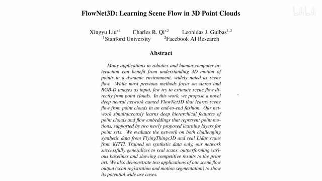
00:00:00–00:00:14 · 画面 001大家好，今天我们来快速说一篇论文 FlowNet3D: Learning Scene Flow in 3D Point Clouds。那么，我们知道这个 Scene Flow 之于这个 Point Clouds 就相当于这个 Optical Flow 之于我们的这个 Video 或者是 Images。那具体来看，在本文中呢，作者定义这个 3D Motion Flow 或者叫这个 Scene Flow 这个问题呢，就是两帧的这个 Point Clouds
00:00:14–00:00:37 · 画面 002
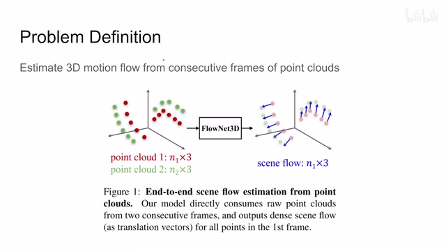
00:00:14–00:00:37 · 画面 002它们在时间上是连续的嘛，作为我们的这个模型的输入输出呢，以这个第一个点云的视角来看，就是这个点云中的每一个点它的在下一帧的这个运动的这个方向，这个呢就是作者定义的这个 scene flow那么为了解决这个问题呢，作者呢在本文中呢也是沿用了一个经典这个 encoder decoder 这样一个形式，只不过呢因为我们处理的是原始的这个点云数据，所以呢这个 encoder decoder 还有中间的这个 bottleneck 这个部分呢需要做一些相应的调整，并且因为我们是处理的两帧点云，所以呢中间呢我们叫它 merge 叫它这个 embedding 不要叫它这个 bottleneck 更为合理一点，那么下面呢我们就继续来看
00:00:37–00:01:10 · 画面 003
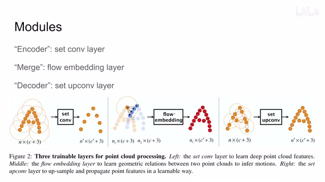
00:00:37–00:01:10 · 画面 003这个本文介绍的这个三个模块啊，其实呢他们的物理实现呢都是一种东西。那首先呢是这个 encoder 就是 hierarchical point cloudfeature learning 啊，本质上就是一个 tfeature 然后 downsampling 的过程
00:01:10–00:02:37 · 画面 004
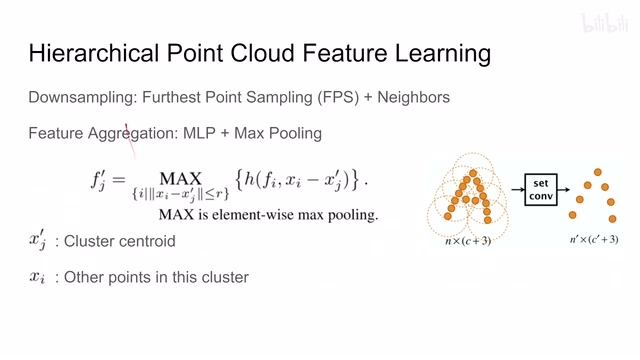
00:01:10–00:02:37 · 画面 004这个呢跟我们这个 CNN 什么的都非常相近了，只不过呢还是因为我们处理的是点云数据，点云数据就是一块点嘛，一个点的集合，我没法确定相邻的两个点这个相邻指的是在这个计算机存储中相邻的两个点啊，就他们之间是否存在什么相应的关系。那同样的类比这个 CNN 呢，我们要增加 feature 的这个深度，减少这个 spatial dimension 也就是它的这个宽度。那在这里呢，就是减少点的数量，怎么处理这个事情呢那当然降采样是好说的，用这个 FPS 也就是 Furthest Point Sampling。那这里简单说一下这个 FPS 它的原理其实非常简单，就是我这么一个点云嘛，比如说这里我先选一个点，这个点比如说它呢就是作为被选中的点，就是我们采样采出来的点。那么下一个采样点呢就是这个点云中距离这个上一个采样点就是第一个采样点最远的一个点。那比如说这个点
这个点好，然后呢把它也作为我们的采样点，那么这样子呢我们就有了两个采样点了。那再往下比如说我们想采第三个点，那么就找距离第二个采样点距离最远的点，那可能是这个点它就是我们第三个采样点。那以此类推，你想选多少个采样点就循环多少次，那么每次呢都是选取距离上一个采样点最远的这么一个点作为我们新的采样点能够把我们大的这个数量一个点云从 n 到这个 n prime 一个相对小的数量，那么一个点云，那当然还是我们不能光顾着把这个点云的尺寸缩小，我们在省略一些点的时候呢，不要抛弃这些点所代表的这个 feature 对吧，所以呢这里还需要做一个 feature aggregation，就是把我们周围的这一片区域的这个 feature 给它提取到我们的这个点上。那么为了提取这个 feature 呢，作者用了一个非常简单的结构，这个 mlp 加上这个 max pool
00:02:37–00:02:38 · 画面 005
00:02:37–00:02:38 · 画面 00500:02:38–00:03:06 · 画面 006
00:02:38–00:03:06 · 画面 006我们在上一步已经做好了这个降彩样对吧，把需要保留的点呢都已经选出来了，然后呢我们根据一定的域值来看这个选中的点周围原来啊有哪些点，比如说这个点周围原来有这样一个点。那么在一开始呢，我们这些的每一个点呢都带着一个长度为 c 的这么一个 feature，同时呢它的 xyz 三坐标，所以呢这个 tensor 尺寸是长这个样子。那这里呢这个 s3 prime 就是我们的这个聚带中心，这个被选中的点
00:03:06–00:03:07 · 画面 007
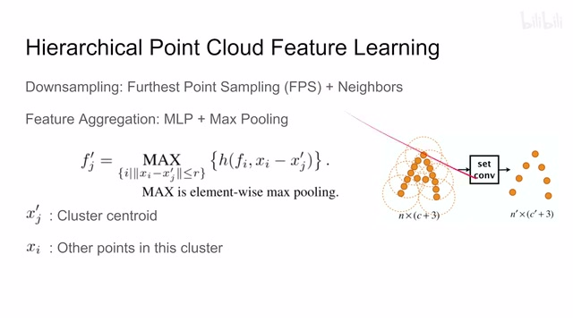
00:03:06–00:03:07 · 画面 00700:03:07–00:04:38 · 画面 008
00:03:07–00:04:38 · 画面 008XI 就是距离这个被选中的点周围的一个区域里面它包含的这些点叫 XI。这里我们看到它把两个点的这个坐标的这个 X 还有呢这个 XI 这个点它的这个 feature串接起来送到这个 h 是一个 mlp 里面，那这样子呢，我们得到一个 feature。那这个 feature 呢，是跟着这个 xi 走的，也就是这里这些没有被选中的点。那么每个没有被选中的点都有这么一个 feature，最后呢，把它给它集合起来，做一个 element wise 的 max pooling。也就是说，这个 vector 里面每一个 dimension 对吧，最大的这个值给它保留下来。那这样子呢，就保留了一个长度为 c'的这样一个 vector，我们叫它这个 fg'它呢，就是我们采样出来的这个点。
它对应的这个 feature，那么对于这个里面每一个采样出来的点都做这么一通操作，那么这样子呢，我们就可以把整个这个 point cloud 给它当 sample 成这个样子，同时呢，每一个这个 feature 呢，集合了它领域的周围的这个信息，是一个非常经典的方法，这个当然也不是本文作者提出的。那本文的主要的贡献呢，在于我后面的两个部分
00:04:38–00:06:08 · 画面 009
00:04:38–00:06:08 · 画面 009那一个是这个 Point Mixer，因为呢，我们在本文的任务中呢，不是什么 Classification 提 feature 这些东西，本文呢是要估计两个 Point Cloud 它们之间的这个 Flow 就是这个 3D Motion。那么为了估计这个 Motion 呢，我们就需要有一层它能够处理两个 Point Cloud。那所以呢，你可以看到这层它的输入呢，所以你可以看到呢，这层的输入呢是 N1 乘以 4 加 3 和这个 N2 乘以 4 加 3对吧，C 是这个 feature 的数量，N1N2 呢是分别是两个点云中点的数量，它们两个呢不一定完全一样。那么下面的问题是怎么样把这两个点云给它融合起来呢？那说到两个点云的融合，其实在刚刚我们刚刚介绍了一种结构，它可以把两个点云的数据处理起来。我们来看，假如说我们以第一个点云的这个点为视角
那对于这个第一个点元里面的每一个点来说啊，他给他一个距离的域值，让他去找在这个范围中第二个点元的点有哪些啊，就是这个蓝色的这个点。然后呢，我们把这个圈里的所有的点的 feature 都集中到这个橙色的这个点上，也做一次 aggregation。这里的 aggregation 出来呢，做着叫它这个 flow embedding。
怎么算的呢？结果跟之前的方法也是一样的一个 mlp 对吧，fi 也就是这个橙色点的这个 featuregj 也就是蓝色点的这个 feature。然后呢，yg 是这个蓝色点的坐标，si 是这个橙色点的坐标，也是坐标 xfeature 不过是两个点的这个 feature 了。然后呢，送 mlp 里面，每一个这个蓝色的点呢，还是一个这个 feature vector。那所有的蓝色点。
00:06:08–00:06:09 · 画面 010
00:06:08–00:06:09 · 画面 010也是用这个 max pooling 给它集合起来，最后呢，我们就得到是一个点云，这个点云的数量呢跟这个第一个点云的数量是一致的，同时呢，feature 的数量呢由这个 C 加 3 变成了 C'加 3，这个 C'呢这里呢就是这个 EI 这个 embedding 它的长度了。所以这个模块的结构跟上一个模块结构完全一样，但是呢，它表达意义，它使用的这个输入的结果是完全不同的
00:06:09–00:06:21 · 画面 011
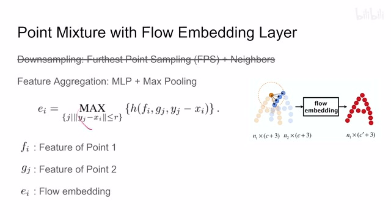
00:06:09–00:06:21 · 画面 01100:06:21–00:06:22 · 画面 012
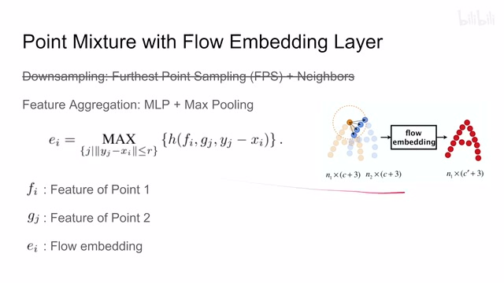
00:06:21–00:06:22 · 画面 01200:06:22–00:06:41 · 画面 013
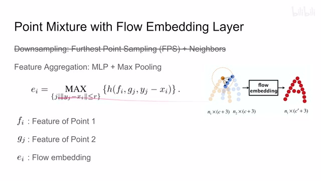
00:06:22–00:06:41 · 画面 013虽然解释起来要花点功夫，但是这个程序员写写代码来非常高兴啊，直接用上面一个代码就可以了啊。那么这个呢就是这个 point mixture，也就是作者怎么样把两个这个点云给它合到一起的，提出一个 embedding 这样一个过程。那么最后呢就是这个 flow refinement 啊，解释一个 decoder，就是我们最开始之前做这个 downsampling 点的数量越来越少，但是因为后面我们毕竟要做这个 scene flow 啊，需要每一个点的这个 motion
00:06:41–00:06:47 · 画面 014
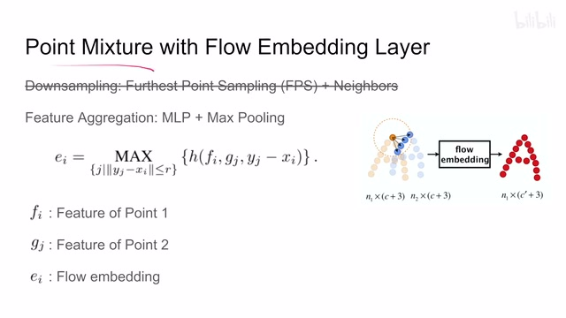
00:06:41–00:06:47 · 画面 01400:06:47–00:06:49 · 画面 015
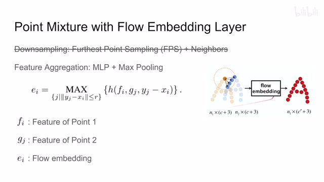
00:06:47–00:06:49 · 画面 01500:06:49–00:08:25 · 画面 016
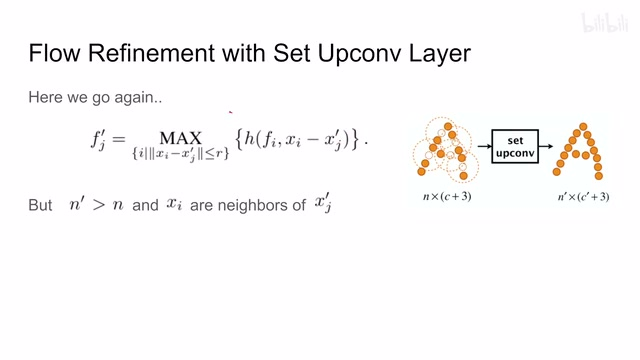
00:06:49–00:08:25 · 画面 016怎么办呢？我们这里需要把这个点的数量再给它扩充回来。那本质上相当于在我们这个相对稀疏的这个点元中添加出一些关键的点。那对于这个新增的点来说，它的坐标是好说的，你直接从之前这层这个 downsample 的时候一个 skip connection 过来，保留一下这些点的坐标，那全 OK。但是它的这个 feature 怎么办呢？
这个时候我们又想起我们刚刚这个结构来了我们因为已经知道我们要这个新增的点位置在哪我们从之前当散布的过程中把我们这个点拉过来就可以了吗然后呢我们也是画个半径在这个范围内的已经存在的点他们的 feature 我们是知道的把他们这个 feature 还有这个空间位置上的这个差放到我们这个 MLP 里面然后呢还是每一个已经存在的点呢它都有一个 feature 能提出一个 feature vector 来然后呢这些 feature vector 对吧再做一次 max pooling 就可以把这个缺失的这个点它的这个 feature 给它补完出来了就是用周围的点的这个 feature 给它补完出来那这种设计当然要比你直接去使用这些已经存在点的 feature 然后做差值根据空间位置做差值这种方法呢要更加就是有设计感一些
那么以上呢就是本文使用的这个三个网络中的模块还是一个降采量 merge 生采量的这么一个过程但是虽然如此它们的意义各不相同本质上它们使用的还是同样的一个网络的结构这个呢就是这篇文章很取巧的一个地方那最后我们来看一下整个的这个网络结构的设计一个网络它的输入呢是两个这个点云我们要估算从 N1 到 N2 那怎么做呢这里呢首先安排了两个这个 set convolution
00:08:25–00:08:26 · 画面 017
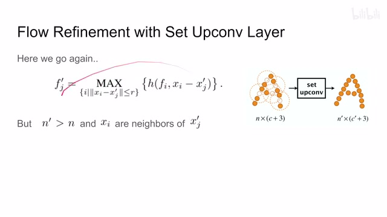
00:08:25–00:08:26 · 画面 01700:08:26–00:08:31 · 画面 018
00:08:26–00:08:31 · 画面 01800:08:31–00:09:23 · 画面 019
00:08:31–00:09:23 · 画面 019也就是这个 downsample 也就是 encoding 这么一个过程那么经过这两层之后呢我们就有了这个 local features 现在呢是时候把这个 feature 给它融合起来了就使用了一层我们这个 flow embedding 把这两个 feature 给它融合起来可以看到这个半径要选的很大因为我们两个点云一旦运动起来他们的距离可能是相对比较远的那 embedding 之后呢得到一个 embedding 的这个 feature 那这里呢作者选择了继续降太阳这样使得我们这个全局显得更加这个平滑一点那最终呢得到我们这个 bottleneck 也就是这个 flow embedding 那完事呢之后呢我们因为还是要做每一个点的这个 motion flow 嘛所以呢要给它还原到原来这个点源的这个位置大小那这个时候呢就需要这个 up sampling 跟 unit 一样之前的这个 skip connection 对吧接过来
00:09:23–00:09:24 · 画面 020
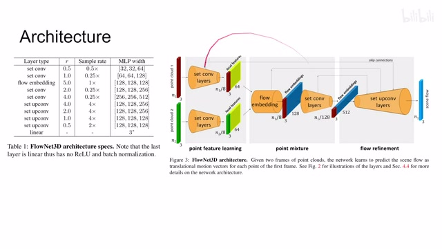
00:09:23–00:09:24 · 画面 02000:09:24–00:09:29 · 画面 021
00:09:24–00:09:29 · 画面 02100:09:29–00:09:30 · 画面 022
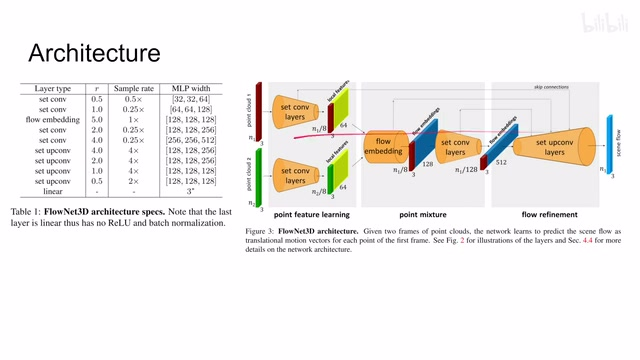
00:09:29–00:09:30 · 画面 02200:09:30–00:09:35 · 画面 023
00:09:30–00:09:35 · 画面 023然后把我们的点让我们的 mrp 把它的 aggregation 给它插直插出来最后输出一个三坐标的这么一个 motion flow 那就可以了总的来说这个网络的结构也是非常的清楚作者的主要贡献还是把前面的 encoder 结构给它活用到 embedding mixing 还有 decoder 的部分那么介绍完了这个结构我们就可以看到作者使用的 loss
00:09:35–00:09:37 · 画面 024
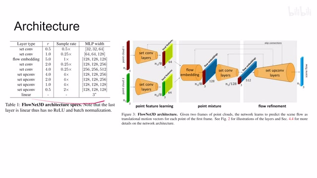
00:09:35–00:09:37 · 画面 02400:09:37–00:09:54 · 画面 025
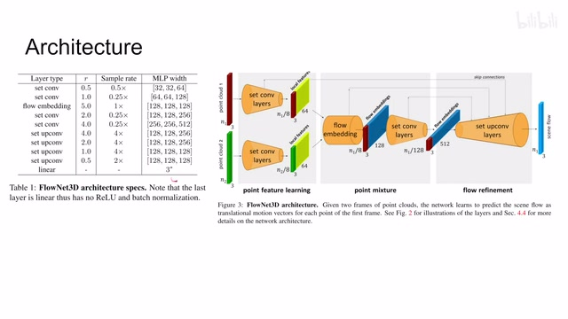
00:09:37–00:09:54 · 画面 02500:09:54–00:10:07 · 画面 026
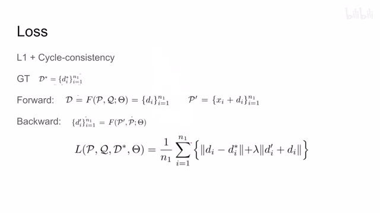
00:09:54–00:10:07 · 画面 026这里呢做的使用是 L1 加这个 cycle consistency。这是你在做这个 flow estimation 或者是这个 stereo 这个双目这个视觉恢复的时候经常会使用的这个 cycle consistency。首先我们有这个 Ground Truth，它跟我们的这个 forward pass 也就是正常的我们算这个 P1 到 P2 的这个 motion flow 得出来的这个结果，它们呢就可以构成一个 L1。
00:10:07–00:10:08 · 画面 027
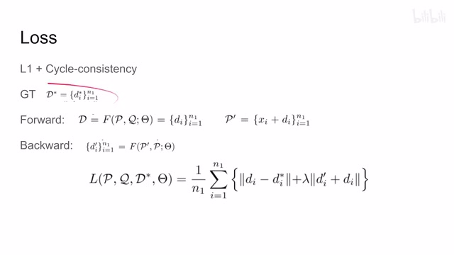
00:10:07–00:10:08 · 画面 02700:10:08–00:11:22 · 画面 028
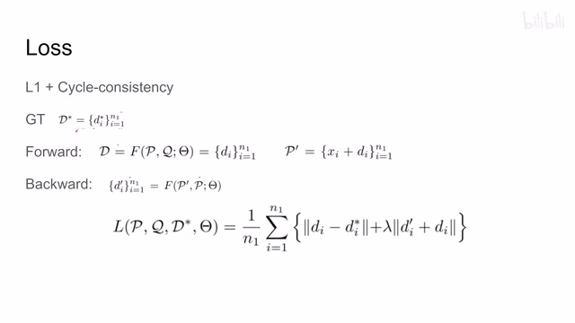
00:10:08–00:11:22 · 画面 028那么当然有了这个结果呢，我们就可以根据这个结果构筑另一个 point cloud，我们叫它这个 p prime。它呢就是我们根据第一个 point cloud 加上我们估计的这个 motion flow，那估计出来的估计出来的这个又一个 point cloud。那么如果我们从这个新的这个点云 p prime 这个视角来看，从它出发到这个原来的这个点云这个 p 这个 motion flow。
它是不是正好应该和我们从 P 到 P'这个 motion flow，也就是一开始这个 forward 的这个 motion flow，它们是一个相反的关系。这样子无形之间它又给我们提供了一个很好的 supervision。那所以你可以看到这里呢，我们又做了一个叫做 backward，它的第一个输入呢是这个 p prime，相当于是从 p prime 计算到 p 的这么一个 motion flow 对吧？得到这个结果那得到这个结果呢，应该跟上面这个 fold 的这个结果，它们正好是相反的。所以看到这里呢就是这个 cycle 这个 loss。然后因为我们所有的计算呢都是根据这个 n1 来绑定的，也就是第一个 point cloud 的数量来绑定了，所以这两个 loss 呢可以被直接统一起来，没有任何压力。那这个呢就是本文使用的这个 loss。
00:11:22–00:11:23 · 画面 029
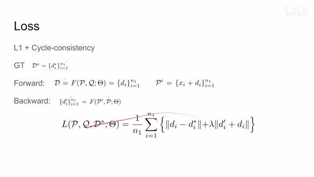
00:11:22–00:11:23 · 画面 02900:11:23–00:11:30 · 画面 030
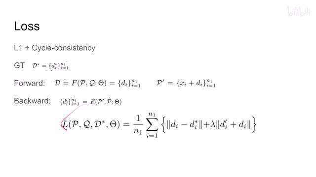
00:11:23–00:11:30 · 画面 030非常简洁的一个设计。好的，那么以上就是本文主要的技术贡献了。那么下面我们来看作者汇报的一些结果。首先是 FlyingThings3D，它就是在一个真实的场景中加上一些人工合成的部件合成的一个数据集。可以看到本文的方法相对于 ICP 这都是什么年代的，取得非常好的结果。同时至于注意到这有好多不同的 baseline，这些东西是什么呢？看到这里。
00:11:30–00:11:46 · 画面 031
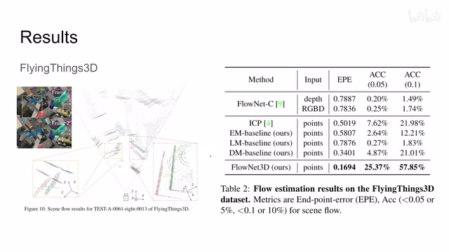
00:11:30–00:11:46 · 画面 03100:11:46–00:11:47 · 画面 032
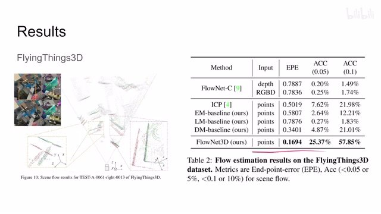
00:11:46–00:11:47 · 画面 03200:11:47–00:11:50 · 画面 033
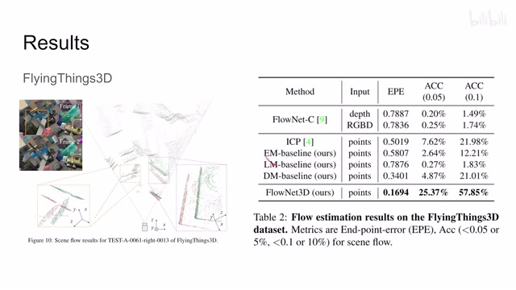
00:11:47–00:11:50 · 画面 03300:11:50–00:12:00 · 画面 034
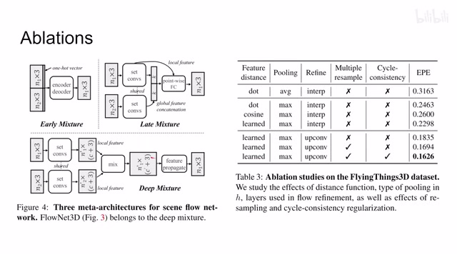
00:11:50–00:12:00 · 画面 034作者呢其实研究了说，我们应该在什么位置把两个这个点云给它 merge 起来。那么关于这些实验的这个具体的配置呢，感兴趣的朋友可以看他们的这个幅度里面详细的有介绍，这些网络是怎么样一个结构。那这里呢是作者做了一下 ablation，比如说像这个 refine 里面就是我们怎么生产样的时候对吧，是使用直接差值还是说使用现在这个方法
00:12:00–00:12:01 · 画面 035
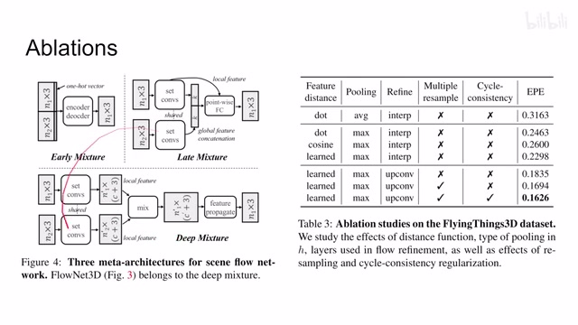
00:12:00–00:12:01 · 画面 03500:12:01–00:12:07 · 画面 036
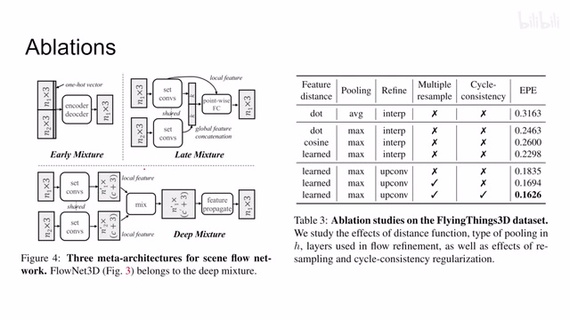
00:12:01–00:12:07 · 画面 03600:12:07–00:12:08 · 画面 037
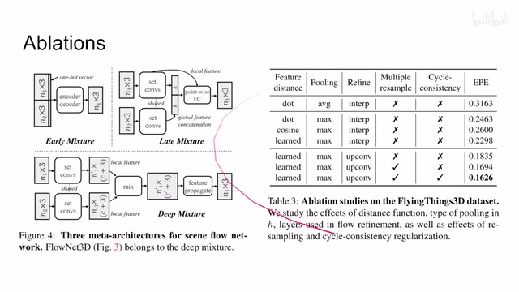
00:12:07–00:12:08 · 画面 03700:12:08–00:12:41 · 画面 038
00:12:08–00:12:41 · 画面 038它是一个 multiple resample 它是因为说我们在当 sample 的过程中可能会有一些随机性产生的结果呢不是那么稳定那怎么办呢就是我在这个 inference 的时候我一个样本我去多去在模型中跑几遍得到很多的结果然后求个平均那这种方法呢给了我们一定的这个性能的提升还有这个 cycle consistency 它呢也有一定的作用那么这个呢是作者汇报的主要结果那此外呢作者还试了这个 KITTI 数据集
00:12:41–00:12:42 · 画面 039
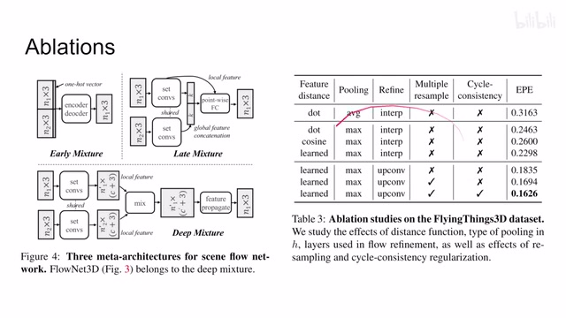
00:12:41–00:12:42 · 画面 03900:12:42–00:13:03 · 画面 040
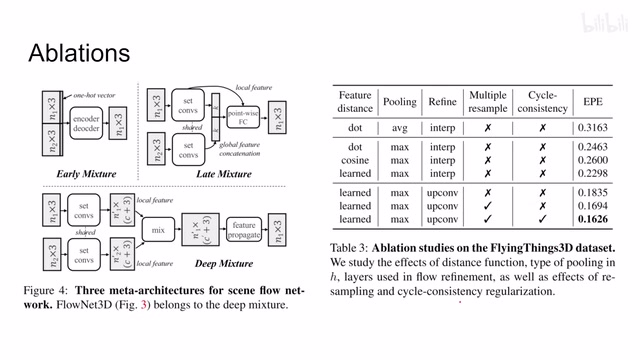
00:12:42–00:13:03 · 画面 040根据不同部分的这个点云它运动模式的这个不同的做了这个分类，能够把我们不同运动的这个物体呢给它分割出来。那么这个呢，感兴趣的朋友呢非常推荐你去原文查看。好的，以上就是我对这篇论文的一个快速的一个介绍。那么感谢您的收看，再见
00:13:03–00:13:04 · 画面 041
00:13:03–00:13:04 · 画面 041转写与来源说明 · 0 个自动复核提示
保留 33 个原始语音片段，0 个片段触发自动复核提示。提示仅用于定位可能的术语、重复或识别问题，不等于已确认错误。
讲解画面为源视频截图（640×360），不是可编辑 PPT 文件。全片按每秒 2 帧扫描内容变化，逐步展开页保留；连续动画保留代表画面。清晰度受源视频限制。
原视频：paper/合集_2026-10-16_新模型/[论文简析]FlowNet3D Learning Scene Flow in 3D Point Clouds[1806.01411].mp4
SHA-256：86ca991c2569c50a7cc420ccf7fc994823fd8bfb44104747f2f38a281930c351
全文按视频语音与画面制作。原论文可从上方链接下载；完整资料包保留全文、原始逐字稿、字幕和校对记录。